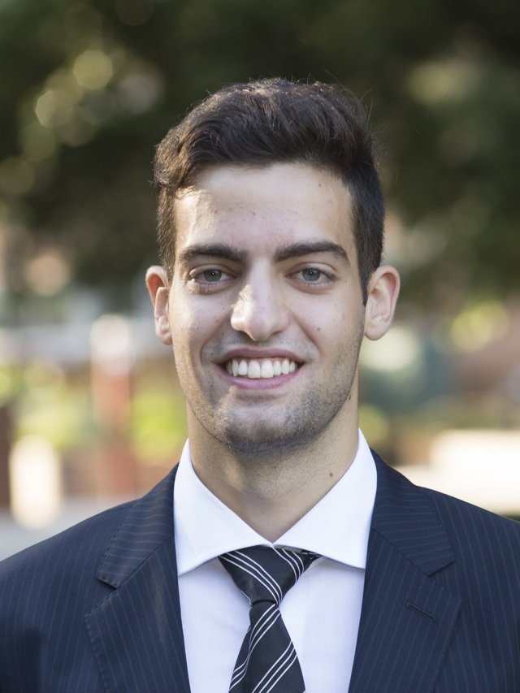

Assistant Professor of Financial Management
IESE Business School

Email: crizzi@iese.edu
I am open to consulting engagements with firms, investors, NGOs, development banks, and public institutions on topics at the intersection of finance and the natural environment. My work draws on peer-reviewed research, geospatial data, and financial modelling to turn environmental information into decision-relevant estimates.
My research on the market value of natural capital won the BlackRock Applied Research Award and was featured by the UN Principles for Responsible Investment. Related work on nature restoration and household wealth is published as an NBER Working Paper, and I held a Marie Skłodowska-Curie post-doctoral fellowship from the European Commission.
Engagements can range from a short expert consultation to a multi-month project. To discuss a potential collaboration, write to crizzi@iese.edu.